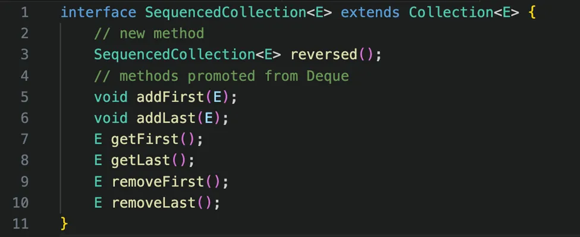
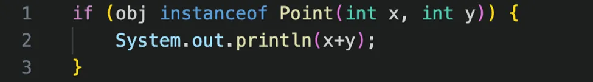
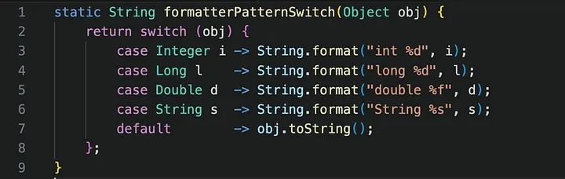

Java 21: atualizações
Novas dinâmicas e funcionalidades
Temos bastante assunto para falar, então vamos dar uma olhada pela superfície do que temos disponível e que já é um diferencial para pessoas desenvolvedoras. Bateu a curiosidade? Então arrasta pra cima!
Sequenced Collections: para o caso de Coleções de Dados Ordenadas, temos agora uma nova Interface para recuperação do primeiro e último elemento, e para reversão da sequência de dados.
Generational ZGC: podemos contar com um novo modelo de Garbage Collector (GC) para melhorar a performance de nossas aplicações, principalmente aquelas que requerem uso de memória e CPU. Isso pois o ZGC mira diminuir os riscos da aplicação na alocação de recursos, diminuir a sobrecarga de memória e de CPU.
Record Patterns: alcançamos aqui o que eu falei no começo deste artigo: essa feature tem um potencial gigantesco para programação funcional, já que permite que eu desconstrua um "Record" sem esforço e assim extraia campos específicos deles, fazendo uso com o "Pattern Matching".
Pattern Matching for Switch: somando-se aos Padrões para Records, temos a capacidade de usar correspondência de padrões para switch e sofisticar nossos códigos de muitas maneiras:
Então juntamos esses dois recursos para habilitar um padrão funcional e de Programação Orientada a Dados no Java. Aqui temos um grande potencial dessa versão da linguagem. Para você se aprofundar neste assunto e também se familiarizar, recomendo o artigo do InfoQ sobre Data Oriented Programming Java.
Virtual Threads: e junto a tudo isso, entra também toda a parte do conceito de que as threads não são mais controladas apenas pelo Sistema Operacional, e sim pela Máquina Virtual do Java (JVM), o que aprimora ainda mais a performance das aplicações, consumos de recurso, redução de consumo de memória e a qualidade do código.
Key Encapsulation Mechanism API: pensando em segurança e criptografia, agora temos uma API padrão que nos permite usar a técnica de criptografia KEM, algoritmo que é usado inclusive em criptografias quânticas, uma grande ferramenta para melhorar a segurança dos nossos dados e aplicações. E para você que gostaria de entender um pouco mais da teoria por traz deste mecanismo, segue esse artigo da Cloudfare.